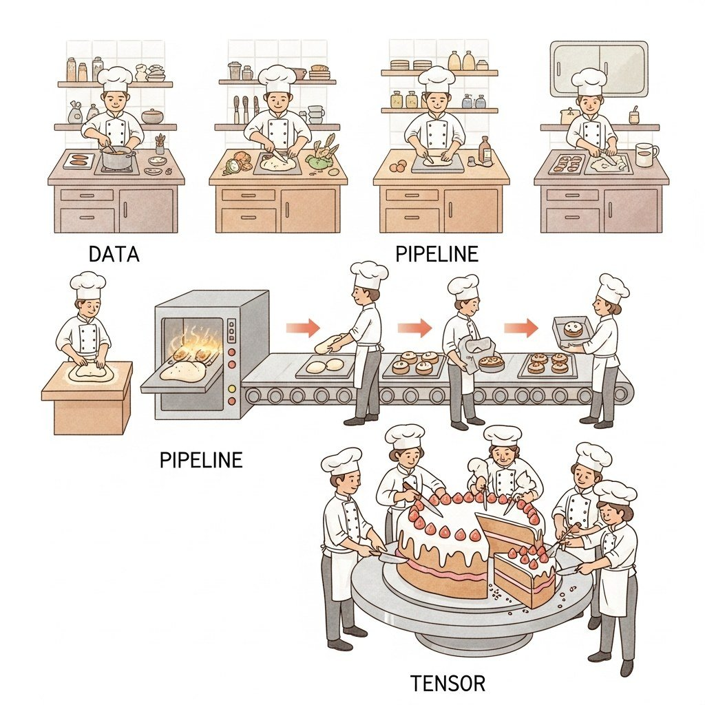

"Maintenance copilots, inspection reports, work-order drafting. The plant-floor LLM use cases that are quietly returning hours per shift, while the headlines chased robots."
Token, Plant-Floor-Reader AI Agent
Seven categories of manufacturing LLM work have demonstrated reliable production deployment by mid-2026: maintenance copilots, inspection-report summarization, work-order drafting, supplier risk intelligence, ERP/MES natural-language query, predictive-maintenance triage, and shop-floor voice interfaces. Every successful deployment sits on the IT side of the IT/OT boundary, with information flowing to OT through audited, human-approved channels. This section walks through each use case and the architectural posture that has stabilized.
Prerequisites
This section builds on the RAG patterns from Chapter 32, the conversational-AI patterns from Chapter 37, and the agent-safety framing from Section 49.1. The IT/OT boundary architecture is detailed later in this chapter.
Maintenance Copilots Over Equipment Manuals
Foxconn's Foxbrain announcement in early 2025 noted that the model was trained in roughly 4 weeks on 120 NVIDIA H100 GPUs, a tiny footprint by frontier standards. The strategic point Foxconn emphasized was not raw capability but full sovereignty: Foxconn assembles iPhones and would not let a U.S. cloud vendor see its production-line telemetry. The model is small, but its data moat is approximately the size of the consumer electronics industry.

The most common starting point: RAG over the OEM manuals, internal SOPs, historical work orders, and tribal-knowledge wikis. A technician facing an unfamiliar fault asks the copilot in natural language; the copilot returns the relevant manual section, similar past tickets, and the diagnostic checklist. Major manufacturers (Siemens, Bosch, GE Vernova, Caterpillar, John Deere) have shipped variants of this. Reported productivity gains (mostly from vendor and customer case studies rather than independent audits): 15-30% reduction in mean-time-to-repair on covered equipment classes, concentrated on routine failures where the manual or past tickets contain a direct match; novel or chained-cause faults see considerably smaller gains and are where the human technician's experience continues to dominate.
Two contrasting deployment shapes anchor this pattern, and both recur throughout the chapter: the OEM-shipped copilot, exemplified by Siemens Industrial Copilot, where the equipment maker bundles a copilot trained on its own manuals, and the manufacturer-internal model, exemplified by Foxconn's Foxbrain, where the operator builds a sovereign LLM over its private production-floor data. The architectural and commercial trade-offs between these two shapes (who owns the manuals, who controls the upgrade cadence, what happens when a plant runs equipment from many OEMs) are dissected in the named-vendor postmortems of Section 73.5; here it is enough to register that both are live, shipped products rather than pilots.
Inspection Report Summarization and Trend Detection
Visual inspection reports and quality-control narratives accumulate in unstructured form. LLMs extract structured fields (defect type, severity, location, root-cause hypothesis), aggregate across batches, and surface trends a human inspector might miss across thousands of reports. Pairs naturally with classical anomaly-detection over the structured outputs.
Work-Order and Operational-Document Drafting
Drafting work orders, change-management documents, deviation reports, and pre-shift briefs from structured inputs. The LLM produces the prose; humans review and sign. Particularly valuable in regulated industries (pharma manufacturing, aerospace, automotive) where documentation quality is itself a compliance obligation.
Supplier Risk and Procurement Intelligence
RAG over supplier filings, news feeds, sanctions lists, and contract terms. The LLM produces a risk briefing: financial-distress signals, geopolitical exposure, single-source concentration, recent disruptions. Procurement teams report these briefings cut research time from days to hours per supplier review.
ERP and MES Query Translation
Natural-language interfaces to SAP, Oracle, Infor, and major MES systems. "How many units of part X were scrapped on line 3 last week, and why?" gets translated to the appropriate query against the underlying systems. The pattern: text-to-SQL or text-to-API with strict schema grounding, plus a human verification step before any write operation.
Predictive-Maintenance Triage
The classical ML models (anomaly detection on vibration, temperature, current draw) remain the workhorses. LLMs add value at the triage layer: when an alert fires, the LLM summarizes the recent sensor history, the equipment's maintenance log, and similar past events into a briefing for the on-call technician. The LLM does not predict the failure; it explains what the predictor saw and what historically followed.
A consumer-goods manufacturer runs vibration- and temperature-based anomaly detectors on roughly 1,800 motors across four plants. When an anomaly fires, a small (8B-13B parameter) open-weight LLM, deployed on plant infrastructure, receives a structured payload: the last 24 hours of sensor history, the asset's full maintenance log from the CMMS, the OEM manual section that covers the failure mode the classical model flagged, and the three most similar past tickets resolved in the last two years. The LLM produces a 200-word briefing: what the predictor saw, the most likely failure mode based on history, the recommended diagnostic steps, the parts to pre-stage, and the realistic time-to-repair window. The triage memo posts to the maintenance-planning queue with a citation to every source it used. The on-call technician arrives with the right parts roughly 35% more often than before, and mean-time-to-repair drops measurably for the covered asset classes. On the procurement side, the same model is used for supply-chain-disruption analysis: when a Tier-2 supplier appears in adverse news (sanctions, factory fire, port closure), the LLM produces a risk brief that names the affected SKUs, the alternates qualified in the past 12 months, the current lead-time differential, and the contractual exit clauses. The brief is a recommendation, not an action; procurement leadership signs the contracts. After several Fortune-500 pilots of fully-autonomous procurement-routing agents made commercially-bad calls during 2023-2024 geopolitical volatility, this advisor-with-human-on-the-contract architecture became the industry norm.
The ISA/IEC 62443 family of standards defines industrial-cybersecurity zones (areas of equal trust) and the conduits (controlled connections) between them. The reference pattern for manufacturing LLMs respects these boundaries absolutely: the LLM lives in the enterprise IT zone (Purdue Level 4-5), the MES and historian live in the operations zone (Level 3), and the PLC/DCS/SCADA networks live in the cell/area zone (Levels 0-2). Data flows up from OT to IT through one-way data diodes or audited gateways (historian replication, structured event feeds, signed work-order acknowledgements). The LLM never originates a write that crosses zones; if a maintenance-copilot recommendation needs to update a PLC parameter, the recommendation flows back as a paper or signed digital work order to a human technician, who applies it through the engineering workstation under the standard change-management process. The IT-side LLM may sit behind enterprise-grade firewalls and DLP; the OT-side never assumes a model is on the other end of a connection. This pattern is also explicitly aligned with NIST SP 800-82 Rev. 3 guidance on OT security and is now standard language in ISA-95 / ISA-99 architecture reviews.
Shop-Floor Voice Interfaces
Hands-free voice queries while a technician is gloved, holding a tool, or under PPE. Whisper-class speech recognition plus an LLM grounded in the equipment-specific corpus. Headset and ruggedized-tablet form factors matter as much as the model.
Objective
Build a Siemens-Industrial-Copilot-style maintenance assistant over a small corpus of standard operating procedures and equipment manuals (drawn from the public NIST Manufacturing Extension Partnership SOP library and the Open Document Library on MachineMetrics). Given a fault symptom, the copilot must retrieve relevant manual sections and return troubleshooting steps with citations to the source document and page. The point is to feel how shop-floor LLM design is dominated by citation-traceability and refusal-on-low-confidence, not by raw conversational quality.
Setup
You need an OpenAI API key (or any LLM with structured outputs), a Chroma vector store, and 15 to 20 SOP and manual PDFs. The NIST MEP SOP archive at nist.gov/mep and the public maintenance-manual mirrors hosted by the OpenManufacturing project are usable starting points; the lab also runs on any private manual library a learner has lawful access to.
pip install openai chromadb pypdf langchain-text-splitters pandasSteps
- Ingest 15 manuals. Split each PDF at the section heading. Store each chunk with metadata: document title, section heading, page range, and a stable chunk ID. The chunk ID is the citation handle the technician will see in the final response.
- Build a top-5 retriever with OpenAI's
text-embedding-3-largeand a strict refusal threshold (top-1 cosine similarity below 0.40 returns "I do not have a confident answer; please escalate to a supervising engineer"). The refusal threshold is the IT/OT-boundary protection. - Write a maintenance-copilot prompt that asks the model to return a JSON object with a numbered troubleshooting procedure and a citation array. Each step must reference the chunk ID it was drawn from. Forbid the model from emitting torque values, electrical settings, or chemical concentrations without an exact citation.
- Run 30 simulated fault queries. Half should be in-scope and answerable from the corpus; half should be slightly out-of-scope (right machine class, wrong model number) to test refusal. Capture latency, retrieval quality, and answer quality.
- Score with a human (or GPT-4o-as-judge) rubric. Three dimensions: citation correctness (does the cited chunk actually support the step?), step ordering (does the procedure make sense?), and refusal correctness (did the copilot refuse the out-of-scope queries?). Citation correctness is the bar a plant-safety review will actually check.
Expected Output
A CSV of per-query scores plus a summary table. Citation-correctness rates above 0.90 on in-scope queries and refusal rates above 0.85 on out-of-scope queries are reachable with strict thresholds; the empirical pattern is that lowering the refusal threshold to chase coverage drives citation correctness down sharply, which is exactly why shop-floor copilots ship with the threshold tuned conservatively.
Extension
Add a second verifier-LLM call that re-reads the cited chunk and confirms the troubleshooting step is supported before the response reaches the technician. Measure the cost and latency overhead; this verifier-loop is the architecture Siemens Industrial Copilot and Caterpillar's own maintenance assistants actually deploy for safety-critical procedures.
What Comes Next
Section 73.2 turns to the failure modes specific to manufacturing: the IT/OT boundary, hallucinated torque specs, air-gapped requirements, multi-site drift, and the safety-case implications of LLM use in regulated processes.
- Maintenance copilots over OEM manuals are the workhorse: Siemens Industrial Copilot, Foxconn Foxbrain, and Caterpillar variants ship RAG over manuals, SOPs, and historical work orders, with reported 15-30 percent reductions in mean-time-to-repair on covered equipment classes.
- Inspection reports and work-order drafting cut the documentation tax: LLMs extract defect type, severity, and root-cause hypotheses across thousands of unstructured reports and draft change-management and deviation documents in regulated pharma, aerospace, and automotive settings.
- ERP and MES query translation pairs with strict schema grounding: text-to-SQL or text-to-API against SAP, Oracle, and Infor surfaces shop-floor numbers in seconds, with mandatory human verification before any write operation crosses into the systems of record.
- LLMs triage classical predictive-maintenance models, they do not replace them: vibration and temperature anomaly detectors stay the workhorses, and the LLM summarizes sensor history, maintenance log, and similar past tickets into a briefing the on-call technician can act on.
- Procurement and supplier-risk briefs require advisor architecture: Fortune-500 pilots of autonomous procurement-routing agents made commercially-bad calls during 2023-2024 geopolitical volatility, so the industry norm is advisor-with-human-on-the-contract.
- OT/IT zone-and-conduit isolation per ISA/IEC 62443 is the deployment frame: LLMs live in Purdue Level 4-5 enterprise IT, data flows up through diodes or audited gateways, and any change to a PLC routes back as a signed work order through the engineering workstation.
What's Next?
In the next section, Section 73.10: Conversational Discovery and Named-Vendor Cases, we build on the material covered here.